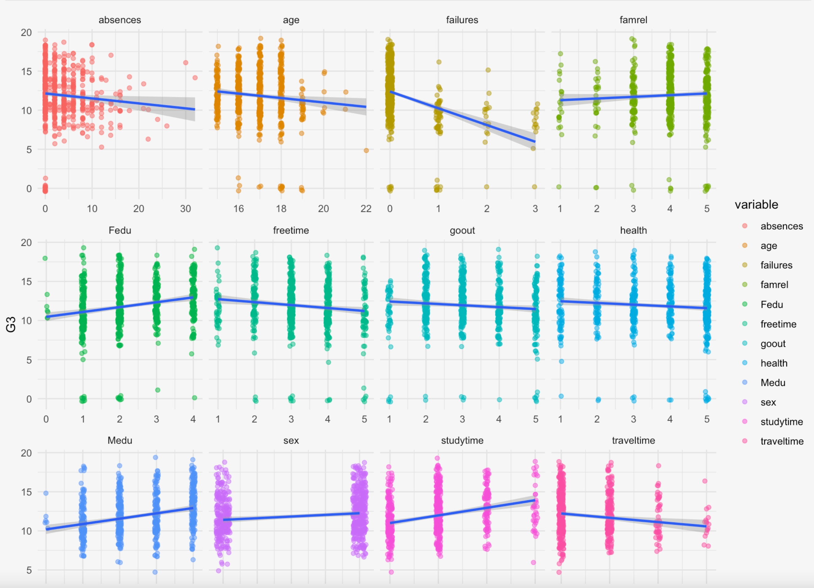

Intro
Various factors affect a student’s ability to succeed, ranging from study time to family situation to community influences to health, and so on. With this BST 260 Final project, I aimed to use data science to predict Portuguese high school students’ final grades based on various factors in their lives. In Portugal, the grading scale is different than in the US – they use a more precise scale of 0 - 20, using numbers instead of letters to indicate student performance (citation).
The dataset I used for this project is from UC Irvine’s Machine Learning Repository. It consists of 649 high school students in Portugal with 33 attributes each, acquired via school reports and questionnaires. Some particular variables of interest, which I used to explore students’ final grade in Portuguese class, were weekly hours spent studying (categorical), age (continuous), sex (categorical – binary), mother’s education (categorical), father’s education (categorical), quality of family relationships (categorical), hours of free time per week (categorical), and current health status (categorical). The first facet-wrap plot below outlines some exploratory data analysis I completed using linear regression to get a better understanding of the data. The y-axis (final grade) ranges from 0 (fail) to 20 (excellent) and is the same for each covariate, while the x-axis varies by covariate.

Rebecca Hurwitz 2022 | rebeccahurwitz@hsph.harvard.edu